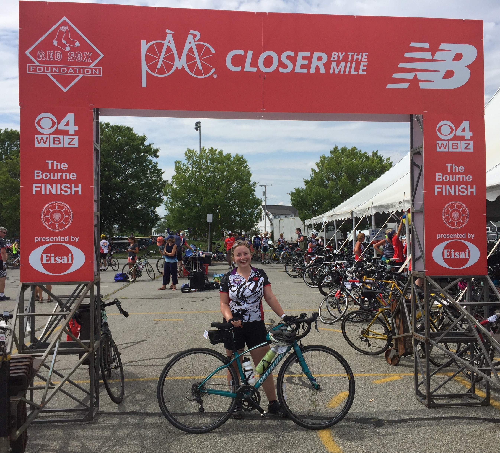
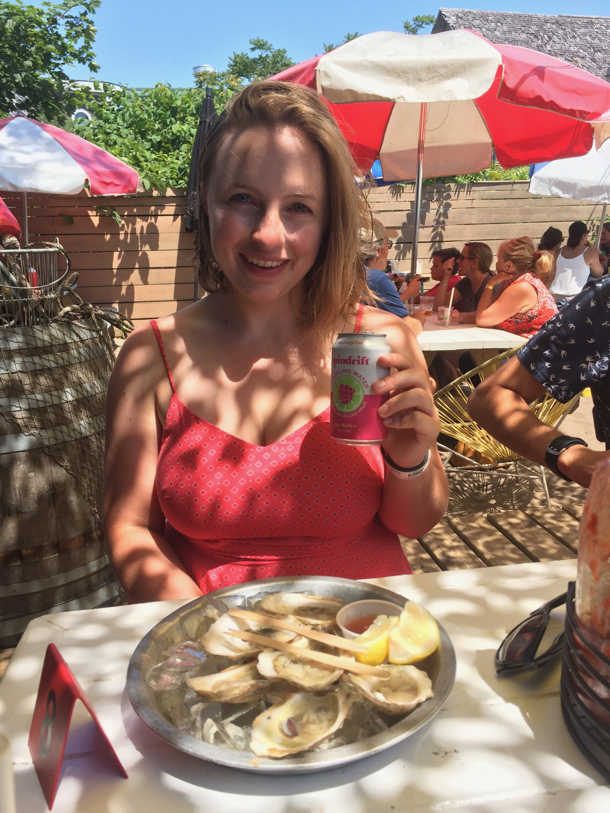

Pan-Mass Challenge Ride Reflection
August 11, 2019
TL;DR I rode the Pan-Mass Challenge for the first time this August! Read on for my recounting of the experience, reflections, and intermittant advice.
Why I Ride
I was so thrilled to participate in the Pan-Mass Challenge for the first time this August. I had heard a lot about the PMC since I moved to the Boston area in 2014, and always see tons of PMC jerseys when I am out on longer rides. I was delighted to finally be able to participate in this incredible fundraising effort, where 100% of rider-raised revenue directly supports the Jimmy Fund and Dana-Farber Cancer Institute's efforts to cure cancer. This was the PMC's 40th year; throughout the ride's history, more than $700M (at the time of writing) has been raised to research and develop life-saving cancer treatments.
First and foremost, I participated in the PMC in memory of and in honor of my maternal grandparents, Mary Jane Adair and Frederick Adair. My grandmother Mary Jane passed away in October after a fight with pancreatic cancer. She was a devoted and involved grandmother who took great interest in my life, supporting me at recitals, soccer games, and graduations throughout my life. She was also a breast cancer and uterine cancer survivor. My grandfather Fred, who is almost 90 years old, is living life to the fullest despite a prostate cancer diagnosis he received last fall. He is planning travel to a new continent, volunteering, writing letters, and charming and delighting everyone who meets him.
As I went through the process of fundraising and communicating with my donors, I learned the names of many others who had been touched by cancer, and, inspired by my friend David, printed out their names to bring on my ride. It was so moving to hear about their stories and to carry them with me. This experience made me see the PMC as an opportunity, albeit a heavy one, to become closer to all the people who supported me and donated to my fundraising campaign. I am so grateful for their generous donations and thoughtful words of encouragement before, during, and after the ride. It meant so much to me to be able to partake in the PMC, and I truly wouldn't have been able to do it without these supporters!
Training and Preparation
For anybody looking for PMC logistical or training advice, I’ll direct you to Ornoth’s PMC page, which is an incredible trove of advice and details accumulated over 14 years of doing the PMC. For my part, I tried to get out on my bike as much as possible to train, and in particular, did a few back-to-back rides and a good amount of hill training. It was a real joy to explore new parts of the greater Boston area as well as return to old favorites. It was also a treat to ride with friends and family, including my brother Matt, boyfriend Sam, and friends Lee, Laura, and Sean. The last few weeks I repeated a hilly 30-mile out-and-back to Walden Pond on Concord Ave through Belmont/ Lexington and Trapelo Road through Lincoln, and I think this really paid off. All told, I put over 650 training miles on my bike. Additionally, I did plenty of indoor spinning, running, and weight training.
PMC Ride Report and Reflections
Night 1 — Sturbridge
The PMC takes over a hotel and conference center in Sturbridge, and most nearby hotels. After battling some rental car fiascos and Mass Pike traffic, Sam and I made it out there. Experiencing it for the first time was definitely a bit overwhelming: there were so many people, and despite my careful study of the PMC handbook, I didn’t know where everything was. Thanks to an army of helpful volunteers, I was able to check-in and get my jersey, get my bike looked at by the kind folks from Landry’s, ate some dinner (we got there late so it was just the dregs, unfortunately), set up camp just across Route 20 in the grassy lawn at the center of the Old Sturbridge Village Lodges, read my book a little, and went to bed around 9:30pm.
Day 1 — Sturbridge - Bourne
I woke up around 4am for my first day of my first PMC — and what a day it was! One of the most notable aspects of the ride were the amazing spectators. They lined basically the entire route — even at 5:30am! — waving signs, ringing cowbells, cheering, and thanking riders for riding and raising money. It was so fun and encouraging to ride in this atmosphere! I focused on taking the ride one rest stop at a time. The rest stops were 15-25 miles apart, and well stocked with water and amazing snacks. I made an effort to drink a full bottle of water or Gatorade between each rest stop, and made sure I ate at each rest stop (favorite snacks: peanut butter and fluff sandwiches, bananas, watermelon, and gummy candy). I also tried to limit the time I spent at rest stops, although between getting snacks, refilling my water, and going to the bathroom, most of my stops were around 20 min, and I spent longer at lunch.


Overall, I loved the riding experience. The scenery was beautiful, the weather was perfect, and because of the PMC’s close coordination with local towns, the roads were largely clear of cars. Most everyone was wearing the 2019 PMC jersey, so there was a great collective feeling to the riding. Everyone had a nametag on their bike bag that said their name and how many years they had ridden the PMC, so many people would bike up to me, congratulate me on my first year of riding, and ask how I was liking the experience.
Night 2 — Bourne Mass Maritime Academy
I finished the first day’s ride — 109 miles — in about 6 hours and 45 minutes of riding time. Arriving at Bourne MMA — which the PMC takes over for the first night’s festivities — was a little overwhelming, since there were so many people and so much activity. After some unfocused wandering, and again with the help of the fantastic volunteers, I managed to get my bike tires pumped, figured out where to stash my bike for the night, collected my bags and showered, and then met up with Sam. We set up my tent, and then headed to the main dinner tent to grab food and a beer, listen to music, charge phones, and relax for a bit. I spent some time stretching and doing a bit of ad-hoc yoga, got a quick massage from one of the fantastic volunteer masseuses, and then headed to bed early again after seeing a beautiful sunset. Unfortunately, I didn’t sleep particularly well because I was near the Bourne windmill and overhead lights on the nearby baseball field; I’d probably choose a different tent site next year even though the view was beautiful!

Day 2 — Bourne - Provincetown
Day 2 of the PMC has a rolling start (instead of the group start on Day 1). I got up around 3:45am so that I could pack up my tent and leave on the earlier side, although found that there were many people who got up and out before me. I guess cyclists are early risers! One of the highlights of the ride was crossing the Bourne Bridge at sunrise, and then a peaceful (and flat) stretch along the Sandwich canal, where we saw at least a hundred fishermen and at least 10 huge fish! The biggest hill of the entire two-day ride came as we were leaving Sandwich; I took it pretty aggressively, so was a little tired for the 15 miles of rolling hills that came afterwards on the way to the first rest stop. I had been warned about the windy straightaways and rolling hills on the back half of the ride, so I tried to find people to ride with so that I could stay out of the wind as much as possible, which worked pretty well. I opted to take the “dunes route” at the end of the ride, an extra 3 miles of hilly riding through the dunes outside Provincetown. Despite the hills, I felt really strong even up to the end, and tried to leave everything out there on the dunes and the last straightaway to the finish line.

I crossed the finish line around 10:45 am after riding 77 miles (roughly 5 hours of riding time). The scenery on Day 2 was really beautiful again, with beach views as we rode up the Cape. The weather was also fantastic, with cloud cover for most of the morning. The biggest difference between the two days was that on Day 2, many people wore their team jerseys and rode with their teams, which changed the dynamic a little; even though I met friendly people, the riding felt a little less collective. At the finish, I took a picture, then found my bags and showered. When Sam arrived (after gamely sitting in PMC traffic on Route 6), we found that event parking was an unexpected $35, so we instead found a miracle parking spot in downtown Provincetown, then got lobster rolls and oysters at The Canteen. Though I had felt great at the end of the ride, I was feeling a bit hot and dehydrated walking around Provincetown, so we grabbed a quick snack for the car then headed back to Cambridge. Luckily, we were mostly able to skirt traffic and got home around 5:30pm.
Final Thoughts
I loved the Pan-Mass Challenge and came out of the weekend certain that I will do it again. I felt like my training really paid off and that I was able to tackle hills confidently throughout the entire two-day, 186 mile ride. Due to some mix of adrenaline and drafting, my average pace was around 16.6 mph, quite a bit faster than the 13-14 mph I averaged during my solo training. When I do the PMC again, I want to make sure I have time to train like I did this time. I would also want to do the ride with friends: riding solo meant I met people and could operate efficiently in the mornings and at rest stops, but was also a bit lonely. Another note for next time: I would want to ride with a small speaker on my bike that could play music. It was really fun to ride around people who were playing music. Finally, while I loved having Sam as my support crew, and was very grateful he gave up his weekend to escort me, I’m not sure that having a dedicated support car is the most efficient way to operate. He wasn’t technically allowed on the MMA campus on Saturday night, and the Cape traffic en route to Provincetown was really bad. Hopefully, in the future, Sam and I can ride together and take the ferry back! All in all, I loved the experience of riding with so many other people, was grateful for the beautiful riding and tame weather, and was thrilled to take part in such an inspiring and important fundraising effort.